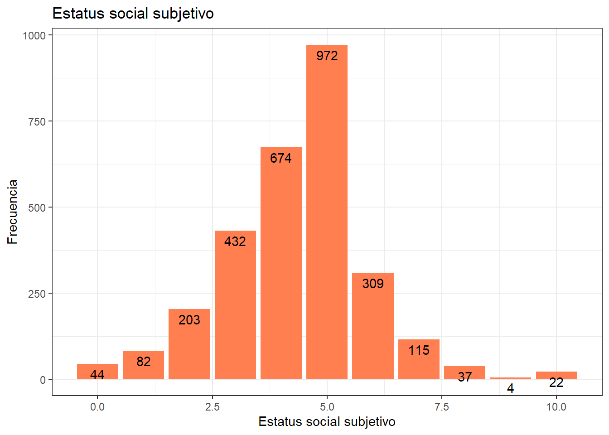
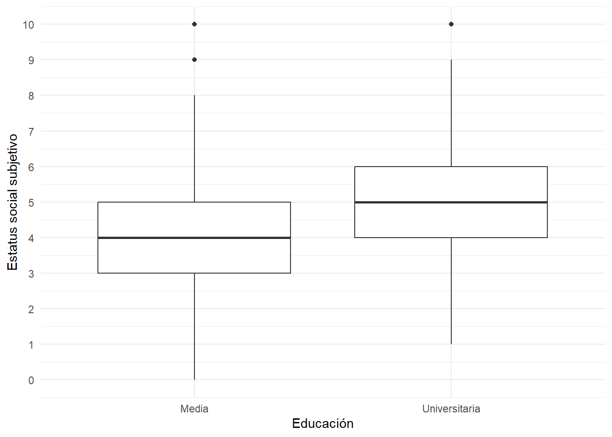
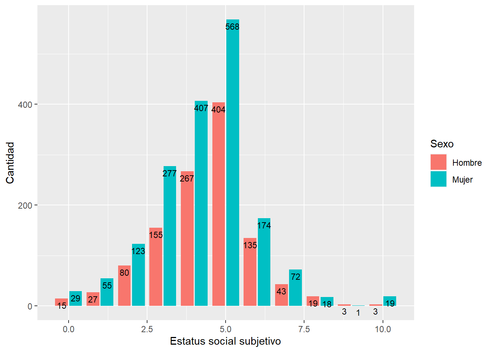
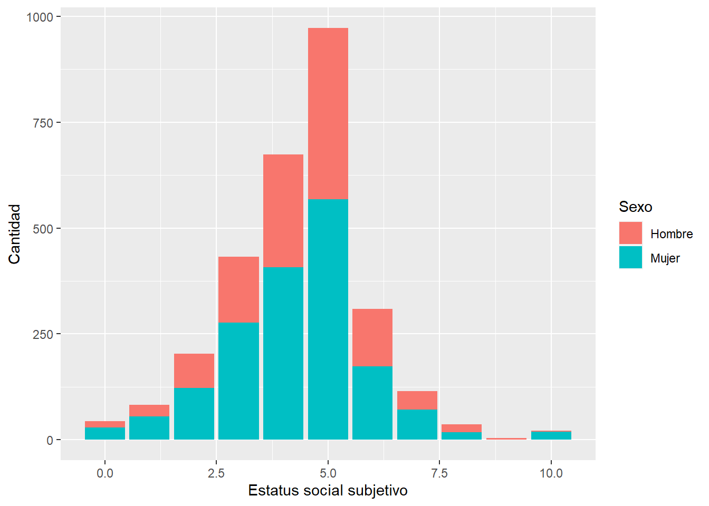
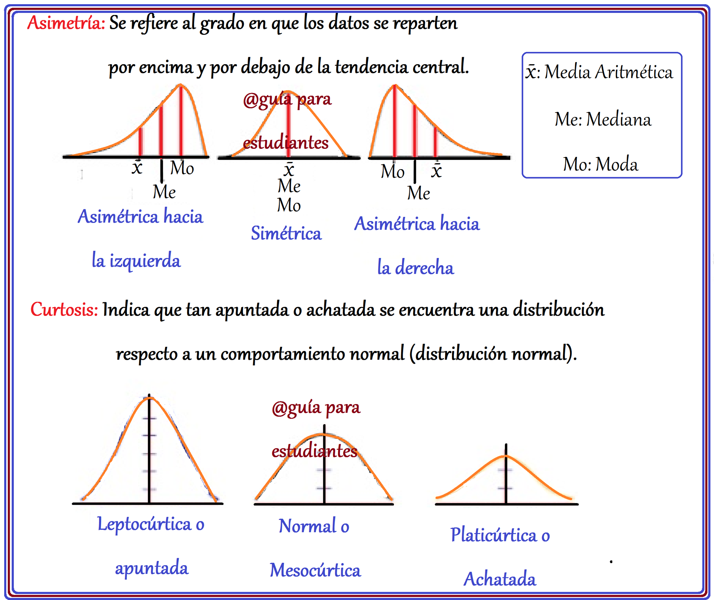

pacman::p_load(sjlabelled,
dplyr, #Manipulacion de datos
stargazer, #Tablas
sjmisc, # Tablas
summarytools, # Tablas
kableExtra, #Tablas
sjPlot, #Tablas y gráficos
ggplot2) # Para la mayoría de los gráficosPráctico 7 Distribución de variables
Metodología I - Magíster en Ciencias Sociales
Presentación
Objetivo de la práctica
En esta Práctica comenzamos con el segundo momento de procesamiento de datos, que es el análisis propiamente tal. El análisis se divide en descripción de variables y contraste de hipótesis. En este curso nos enfocaremos en la primera fase, que llega hasta el punto 3 del código de análisis:

Al igual que el Código de Preparación, el Código de Análisis posee una estructura definida. En este caso son 4 partes, donde las primeras son similares al código de preparación:
- Identificación y descripción general: Título, autor(es), fecha, información breve sobre el contenido del documento
- Librerías principales (de R) a utilizar en el análisis
- Datos (que provienen de los preparados en la fase anterior)
- Descripción de variables
- Tabla general de variables para la sección metodológica del reporte
- Exploración descriptiva de relaciones entre variables
Al final de esta práctica la idea es que cada un_ pueda avanzar hasta el punto 3 del Código de Análisis.
Código de análisis
1. Librerías y datos
load(url("https://dataverse.harvard.edu/api/access/datafile/7245118"))
data <- elsoc_long_2016_2022.2 %>% select(ola, c18_11, d01_01, d02_01, d02_02, d02_03, m0_sexo, m0_edad, m01)
data <- data %>% set_na(., na = c(-999, -888, -777, -666))
data$educacion <- car::recode(data$m01, "c(1,2,3,4,5,6,7)=1;c(8,9,10)=2")
data$educacion <- factor(data$educacion, labels = c("Media","Universitaria"))
data_original <-data
data <- na.omit(data)
data <-sjlabelled::copy_labels(data,data_original)Visualización de datos
print(dfSummary(data), method='render')Data Frame Summary
data
Dimensions: 15085 x 10Duplicates: 825
| No | Variable | Label | Stats / Values | Freqs (% of Valid) | Graph | Valid | Missing | ||||||||||||||||||||||||||||||||||||||||||||||||||||||||||||||||
|---|---|---|---|---|---|---|---|---|---|---|---|---|---|---|---|---|---|---|---|---|---|---|---|---|---|---|---|---|---|---|---|---|---|---|---|---|---|---|---|---|---|---|---|---|---|---|---|---|---|---|---|---|---|---|---|---|---|---|---|---|---|---|---|---|---|---|---|---|---|---|---|
| 1 | ola [numeric] | Identificador de ola de encuesta |
|
|
 |
15085 (100.0%) | 0 (0.0%) | ||||||||||||||||||||||||||||||||||||||||||||||||||||||||||||||||
| 2 | c18_11 [numeric] | Grado de acuerdo: Las diferencias de ingreso son demasiado grandes |
|
|
 |
15085 (100.0%) | 0 (0.0%) | ||||||||||||||||||||||||||||||||||||||||||||||||||||||||||||||||
| 3 | d01_01 [numeric] | Estatus Social Subjetivo: Donde se ubicaria ud. en la sociedad chilena |
|
11 distinct values |  |
15085 (100.0%) | 0 (0.0%) | ||||||||||||||||||||||||||||||||||||||||||||||||||||||||||||||||
| 4 | d02_01 [numeric] | Grado de acuerdo: Justicia distributiva en pensiones |
|
|
 |
15085 (100.0%) | 0 (0.0%) | ||||||||||||||||||||||||||||||||||||||||||||||||||||||||||||||||
| 5 | d02_02 [numeric] | Grado de acuerdo: Justicia distributiva en educacion |
|
|
 |
15085 (100.0%) | 0 (0.0%) | ||||||||||||||||||||||||||||||||||||||||||||||||||||||||||||||||
| 6 | d02_03 [numeric] | Grado de acuerdo: Justicia distributiva en salud |
|
|
 |
15085 (100.0%) | 0 (0.0%) | ||||||||||||||||||||||||||||||||||||||||||||||||||||||||||||||||
| 7 | m0_sexo [numeric] | Sexo del entrevistado |
|
|
 |
15085 (100.0%) | 0 (0.0%) | ||||||||||||||||||||||||||||||||||||||||||||||||||||||||||||||||
| 8 | m0_edad [numeric] | Edad del entrevistado |
|
75 distinct values |  |
15085 (100.0%) | 0 (0.0%) | ||||||||||||||||||||||||||||||||||||||||||||||||||||||||||||||||
| 9 | m01 [numeric] | Nivel educacional |
|
|
 |
15085 (100.0%) | 0 (0.0%) | ||||||||||||||||||||||||||||||||||||||||||||||||||||||||||||||||
| 10 | educacion [factor] |
|
|
 |
15085 (100.0%) | 0 (0.0%) |
Generated by summarytools 1.0.1 (R version 4.3.2)
2024-06-07
data %>% filter(ola==1) %>% frq(d01_01)Estatus Social Subjetivo: Donde se ubicaria ud. en la sociedad chilena (d01_01) <numeric>
# total N=2894 valid N=2894 mean=4.34 sd=1.56
Value | Label | N | Raw % | Valid % | Cum. %
-------------------------------------------------------------
0 | 0 El nivel mas bajo | 44 | 1.52 | 1.52 | 1.52
1 | 1 | 82 | 2.83 | 2.83 | 4.35
2 | 2 | 203 | 7.01 | 7.01 | 11.37
3 | 3 | 432 | 14.93 | 14.93 | 26.30
4 | 4 | 674 | 23.29 | 23.29 | 49.59
5 | 5 | 972 | 33.59 | 33.59 | 83.17
6 | 6 | 309 | 10.68 | 10.68 | 93.85
7 | 7 | 115 | 3.97 | 3.97 | 97.82
8 | 8 | 37 | 1.28 | 1.28 | 99.10
9 | 9 | 4 | 0.14 | 0.14 | 99.24
10 | 10 El nivel mas alto | 22 | 0.76 | 0.76 | 100.00
<NA> | <NA> | 0 | 0.00 | <NA> | <NA># Crear el gráfico usando ggplot2
graph1 <- data %>% filter(ola==1) %>%
ggplot(aes(x = d01_01)) +
geom_bar(fill = "coral")+
labs(title = "Estatus social subjetivo",
x = "Estatus social subjetivo",
y = "Frecuencia") +
geom_text(aes(label = ..count..), stat = "count", colour = "black",
vjust = 1.5, position = position_dodge(.9)) + # agregamos freq de cada barra por grupo
theme_bw()
graph1Warning: The dot-dot notation (`..count..`) was deprecated in ggplot2 3.4.0.
ℹ Please use `after_stat(count)` instead.
graph <- data %>% filter(ola==1) %>%
ggplot(aes(x =educacion, y = d01_01)) +
geom_boxplot() +
labs(x = "Educación", y = "Estatus social subjetivo") +
theme_minimal()+
scale_y_continuous(breaks = c(0,1,2,3,4,5,6,7,8,9,10))
graph
graph2 <- data %>%
ggplot(aes(x =factor(ola), y = d01_01)) +
geom_boxplot() +
labs(x = "Año", y = "Estatus social subjetivo") +
theme_minimal()+
scale_y_continuous(breaks = c(0,1,2,3,4,5,6,7,8,9,10))
graph2
graph3 <- data %>% filter(ola==1) %>%
ggplot(aes(x = d01_01, fill = factor(m0_sexo))) +
geom_bar(position = "dodge2") +
xlab("Estatus social subjetivo") +
ylab("Cantidad") +
labs(fill="Sexo")+
scale_fill_discrete(labels = c('Hombre','Mujer'))+
geom_text(aes(label = ..count..), stat = "count", colour = "black",
vjust = 1.5, position = position_dodge(.9), size=3) # agregamos freq de cada barra por grupo
graph3
Una forma alternativa
data %>% filter(ola==1) %>%
ggplot(aes(x = d01_01, fill = factor(m0_sexo))) +
geom_bar() +
xlab("Estatus social subjetivo") +
ylab("Cantidad") +
labs(fill="Sexo")+
scale_fill_discrete(labels = c('Hombre','Mujer'))
Otra forma alternativa
data %>% filter(ola==1) %>% ggplot(aes(x = d01_01)) +
geom_bar() +
xlab("Estatus social subjetivo") +
ylab("Cantidad")+
facet_wrap(~factor(m0_sexo))+
geom_text(aes(label = ..count..), stat = "count", colour = "white",
vjust = 1.5, position = position_dodge(.9)) # agregamos freq de cada barra por grupo
- Con porcentajes
data %>%
filter(ola == 1) %>%
group_by(d01_01, m0_sexo) %>%
summarise(count = n(), .groups = 'drop') %>%
group_by(m0_sexo) %>%
mutate(pct = count / sum(count) * 100) %>%
ggplot(aes(x = d01_01, y = count, fill = factor(d01_01))) +
geom_bar(stat = "identity") +
xlab("Estatus social subjetivo") +
ylab("Cantidad") +
facet_wrap(~factor(m0_sexo)) +
geom_text(aes(label = paste0(round(pct, 1), "%")),
stat = "identity",
vjust = 1.5,
color = "black",
position = position_dodge(0.9)) +
theme(legend.position = "none")
Distribución de variables
Distribuciones continuas y discretas
- Distribución continua
Las distribuciones continuas aplican a variables numericas (intervalares y de razón). Es una distribución que describe la probabilidad o frecuencia de que una variable continua tome un valor particular dado un intervalo o un rango.
graph4 <- ggplot(data, aes(x = as.numeric(m0_edad))) +
geom_histogram(binwidth=0.6, colour="black", fill="yellow") +
theme_bw() +
xlab("Edad") +
ylab("Cantidad")
graph4 
Por su parte, las distribuciones discretas son comunmente utilizadas con variables categóricas (nominales y ordinales). Son distribuciones en las que una variable sólo puede tomar un número contable de valores distintos. En otras palabras, es una distribución en la que la variable sólo puede tomar valores específicos, en lugar de cualquier valor dentro de un intervalo.
graph5 <- data %>% filter(ola==1) %>%
ggplot(aes(x = factor(m01))) +
geom_bar(fill = "coral")+
labs(title = "Educación",
x = "Educación",
y = "Frecuencia") +
geom_text(aes(label = ..count..), stat = "count", colour = "black",
vjust = 1.5, position = position_dodge(.9)) + # agregamos freq de cada barra por grupo
theme_bw()
graph5 
Asimetría y curtosis
La asimetría es la medida en que la distribución de una variable se aleja de una distribución simétrica a ambos lados de su punto central. ¿Qué tan simétrica es la distribución de mis datos en ambos lados de sus colas respecto al centro?
Por su parte, la curtosis es la medida del grado de agrupamiento de los datos de una distribución. ¿Qué tan agrupados están mis datos en la distribución?
Ambas son útiles para conocer de mejor manera la distribución de nuestros datos, además de que nos permiten conocer bajo qué supuestos podemos realizar analisis más complejos (próximos cursos de la carrera).

Tabla de Asimetría (Skewness)
| Valor de Asimetría | Interpretación | Definición |
|---|---|---|
| 0 | Distribución simétrica | La distribución es perfectamente simétrica, sin sesgo a la izquierda o derecha. |
| > 0 y < 0.5 | Asimetría positiva baja | La distribución tiene una cola ligeramente más larga hacia los valores mayores. |
| 0.5 - 1 | Asimetría positiva moderada | La distribución tiene una cola más notable hacia los valores mayores. |
| > 1 | Asimetría positiva alta | La distribución tiene una cola larga hacia los valores mayores. |
| < 0 y > -0.5 | Asimetría negativa baja | La distribución tiene una cola ligeramente más larga hacia los valores menores. |
| -0.5 - -1 | Asimetría negativa moderada | La distribución tiene una cola más notable hacia los valores menores. |
| < -1 | Asimetría negativa alta | La distribución tiene una cola larga hacia los valores menores. |
Tabla de Curtosis
| Valor de Curtosis | Interpretación | Definición |
|---|---|---|
| 0 | Distribución mesocúrtica | La distribución tiene colas y un pico similar a una distribución normal. |
| < 0 | Distribución platicúrtica | La distribución es más plana, con colas más ligeras y menos datos en el centro. |
| > 0 y < 1 | Leve leptocúrtica | La distribución tiene un pico ligeramente más alto y colas más pesadas que una normal. |
| 1 - 2 | Leptocúrtica moderada | La distribución tiene un pico más alto y colas más pesadas que una normal. |
| > 2 | Leptocúrtica alta | La distribución tiene un pico muy alto y colas mucho más pesadas que una normal. |
Análisis de la forma de una distribución
Analicemos e interpretemos la forma de la distribución de nuestras variables. En este ejemplo tenemos:
una de razón, una ordinal de 10 categorías.
data <- data %>% filter(ola==1)
psych::describe(data$m0_edad) vars n mean sd median trimmed mad min max range skew kurtosis se
X1 1 2894 46.04 15.27 46 45.85 17.79 18 88 70 0.07 -0.98 0.28ggplot(data = data,
mapping = aes(x = m0_edad)) +
geom_density(color = "black", fill = "#FA8072", alpha = 0.8) +
labs(title ="Diagrama densidad: Edad",
x = "Edad",
y = "Frecuencia") 
A partir de los estadísticos entregados y la gráfica de densidad, sabemos que la variable edad tiene una asimetría positiva muy baja (skew = 0.07), lo cual indica que la distribución de los datos es casi simétrica. Esto es consistente con la gráfica, donde la mayor parte de los datos está distribuida de manera uniforme alrededor del centro. Aunque la curtosis negativa (kurtosis = -0.98) indica una distribución platicúrtica, la gráfica muestra una concentración notable de datos en el centro (aproximadamente entre 30 y 60 años), lo que sugiere una distribución central más prominente de lo que la curtosis podría sugerir por sí sola.
psych::describe(data$d01_01) vars n mean sd median trimmed mad min max range skew kurtosis se
X1 1 2894 4.34 1.56 5 4.37 1.48 0 10 10 -0.02 1.19 0.03ggplot(data = data,
mapping = aes(x = d01_01)) +
geom_density(color = "black", fill = "darkred", alpha = 0.8) +
labs(title ="Histograma densidad: Estatus social subjetivo",
x = "Satisfaccion",
y = "Frecuencia") 
A partir de los estadísticos entregados y la gráfica de densidad, sabemos que la variable “Estatus social subjetivo” tiene una asimetría prácticamente nula (skew = -0.02), lo cual indica que la distribución de los datos es casi perfectamente simétrica. Esto es consistente con la gráfica, que muestra una distribución equilibrada a ambos lados del centro. La curtosis positiva (kurtosis = 1.19) indica una distribución leptocúrtica, con una mayor concentración de datos en el centro y colas más gruesas. La gráfica muestra varios picos prominentes, especialmente alrededor del valor 5, lo que sugiere una alta concentración de respuestas en ese punto.
psych::describe(data$d02_01) vars n mean sd median trimmed mad min max range skew kurtosis se
X1 1 2894 2.14 1.06 2 2.02 1.48 1 5 4 0.85 -0.15 0.02ggplot(data = data,
mapping = aes(x = d02_01)) +
geom_density(color = "black", fill = "darkred", alpha = 0.8) +
labs(title ="Histograma densidad: Justicia distributiva: pensiones",
x = "Satisfaccion",
y = "Frecuencia") 
A partir de los estadísticos entregados y la gráfica de densidad, sabemos que la variable “Justicia distributiva: pensiones” tiene una asimetría positiva (skew = 0.85), lo cual indica que la distribución de los datos tiene una cola más larga hacia los valores mayores. Esto es consistente con la gráfica, donde se observa una gran concentración de datos alrededor del valor 2 y una extensión hacia valores más altos. La curtosis negativa (kurtosis = -0.15) sugiere que la distribución es ligeramente platicúrtica, con una menor concentración en el centro y más dispersión en los extremos. Aunque hay un pico pronunciado en el valor 2, los otros valores muestran una mayor dispersión.
Distribuciones empíricas y teóricas
una distribución empírica (u observada) es la distribución de los valores que asume la variable en un grupo concreto a partir de una observación.
Mientras que, por su parte, una distribución teórica es función matématica que expresan la distribución de un conjunto de números mediante su probabilidad de ocurencia. En palabras sencillas, es una función de densidad que permite asignar probabilidades de ocurrencia a los resultados.
Cuando una distribución empírica se asejema a una teórica, podemos aplicarle a la primera las propiedades de la última. Así, nos permiten hacer inferencia estadística y conocer una serie de características de la población.
Una de las distribuciones teóricas más utilizada es la normal o Gaussiana, la cual es una herramienta potente y ampliamente utilizada en estadística y probabilidad, debido a sus numerosas propiedades útiles y a sus aplicaciones prácticas en un gran número de campos y contextos.
Contrastemos ahora la distribución empírica de nuestras variables con la distribución normal
ggplot(data, aes(m0_edad)) +
geom_histogram(aes(x = m0_edad, y = ..density..), bins = 50, color = "black", fill = "grey") +
geom_density(color = "blue")
ggplot(data, aes(m0_edad)) +
geom_histogram(aes(x = m0_edad, y = ..density..), bins = 50, color = "black", fill = "grey") +
geom_density(color = "blue")+
stat_function(fun = dnorm, args = list(mean = mean(data$m0_edad), sd = sd(data$m0_edad)))
En la primera figura vemos la distribución empírica de la variable edad (histograma y densidad). En la segunda, agregamos la curva normal (o distribución), y obtenemos una evaluación gráfica de qué tan bien nuestros datos se ajustan a esta distribución teórica.
Hagamos lo mismo con la variable estatus social subjetivo
ggplot(data, aes(d01_01)) +
geom_histogram(aes(x = d01_01, y = ..density..), color = "black", fill = "grey") +
scale_x_continuous(limits = c(0,10)) +
geom_density(color = "blue")+
stat_function(fun = dnorm, args = list(mean = mean(data$d01_01), sd = sd(data$d01_01)))`stat_bin()` using `bins = 30`. Pick better value with `binwidth`.Warning: Removed 2 rows containing missing values (`geom_bar()`).
Una mejor manera de ver si nuestros datos o distribución empírica se ajustan a una distribución normal, es mediante los Q-Q plots.
ggplot(data, aes(sample = m0_edad)) +
stat_qq() +
stat_qq_line(color = "blue")
ggplot(data, aes(sample = d01_01)) +
stat_qq() +
stat_qq_line(color = "blue")
La idea es que ajuste la curva teorica (la recta) con la mayor cantidad de puntos (la variable observada). Nos permite ver donde ajusta y donde no ajusta.